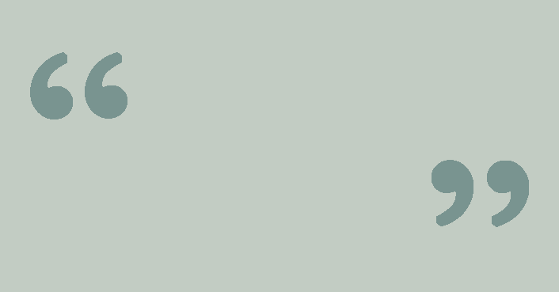
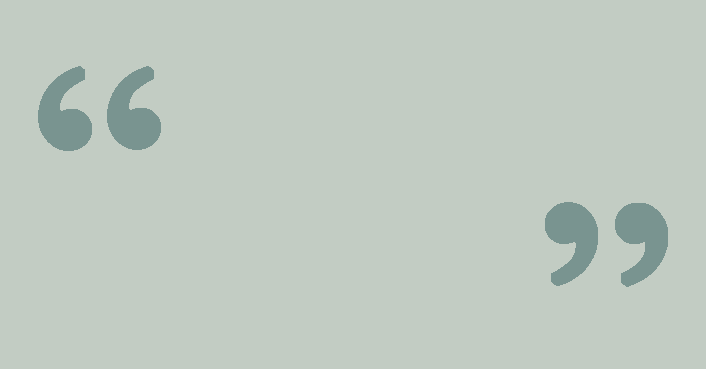

Camilla Dayyani
musik for mennesker
Hvem er jeg?
Mit navn er Camilla Dayyani. Jeg er en talentfuld sangerinde og jeg bor i Århus. Jeg er 43 år og datter af en dansk mor fra Vestjylland og en iransk far. På grund af mine forældres forskellige baggrunde er jeg vokset op med diversitet og en forståelse for, at ting kan ses fra flere vinkler, en evne jeg har taget med mig videre i livet, også i min musik.
Jeg har gået på musikkonservatoriet i København og udgav i 2005 mit første album.
For mig er musikken kommunikation på alle planer. Musik kan få dig til at føle dig set eller hørt, og det synes jeg er ret specielt.
 

Musik er kommunikation for mig. Det er kommunikation på rigtig mange forskellige planer
Min motivation
Musik har noget socialt i sig, og noget som kan inkludere dig. Det der rører mig ved musikken, er det menneskelige i musikken. For mig har det altid været kommunikationen, mødet med publikum, og det at skabe en oplevelse der har været motivationen. Jeg elsker min musik og har altid gang i en masse spændende projekter.
Jeg har blandt andet optrådt i både jazzklubber, på biblioteker og i kirker.

Det motiverer mig virkeligt at have et publikum som er på og som jeg skal fange.
Jazz
Jazz er et kæmpe begreb. Der er traditionel jazz, mainstream jazz, og noget mere speciel jazz. Der er mange forskellige former for jazz og befinder mig klart i midten af det hele. Så det jeg laver er ikke så svært at forstå eller være en del af.
Hess Dayyani Clausen
Scream The Color Red
Mainstream Jazz

Camilla Dayyani Kvartet
Børnemusik
Et af de meget populære projekter jeg er en del af, er Sangskattekisten. Her synger jeg danske børnesange, blandt andet på YouTube. Det er dejligt at tage ud og optræde for børn med Sangskattekisten. De er et helt andet publikum som man, modsat et mere modent publikum, skal fange. Det er en sjov udfordring som sangerinde.

Jeg nyder at tage ud og optræde for børn, det er et helt andet publikum som man skal fange på en helt anden måde.